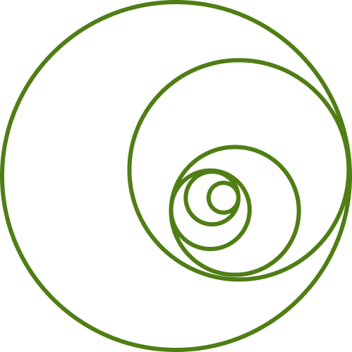

Based in Chicago, IL
People Data // Full-Stack Data // Analytics Engineering // Business Intelligence // Data Visualization // dbt, Snowflake, Looker, Omni // R, SQL, Python // UX/UI // Inclusive Design // Accessibility
I am a lover of plants. I am also a full-stack data person, a designer, a scientist, a greyhound rescuer, and a fairly reliable cat treat dispenser.
These days I work in people data at Braze, on the People Analytics team, hands-on across the full stack from pipelines to insight. Before this I led data and analytics for a multi state operator, building the thing everyone else gets to stand on, a governed single source of truth that around five hundred people could actually use without asking me first. Before that I spent six years in clinical and precision medicine analytics at a pharma company, and before that I earned a PhD in evolution, ecology, and behavior.
It is the same job every time. Take something tangled and make it usable by somebody who is not me. A semantic layer for five hundred people, a chart that tells the truth, a rescue site a first time adopter can move through with confidence. Same work, different tangle, and I love all of it.
Sustainability and accessibility are the things I actually care about. I want to leave the world leafier, greener, and more inclusive than I found it, and I want the digital parts of it to be something everyone can genuinely use.
Evolution is my favorite idea in the universe. How something becomes something else, given enough time and enough pressure. Lately that has opened up into planetary evolution, which I found recently and am happily deep in. I find joy in board games, in worlds built by LGBTQ+ authors, in the vibes and tastes and smells of Chicago neighborhoods, and in three trees in my backyard that took years to settle in and are finally, measurably happy.
